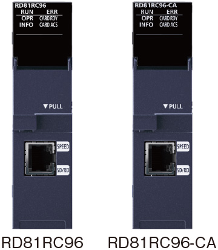
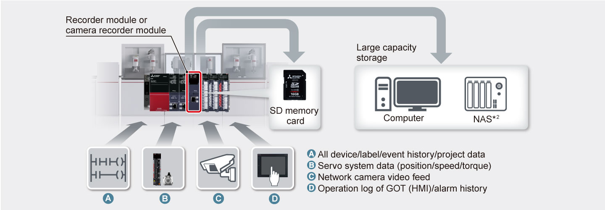
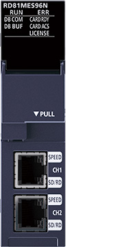
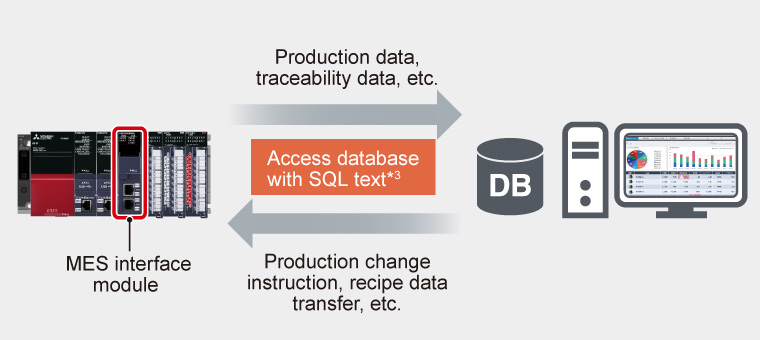
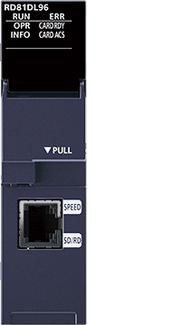
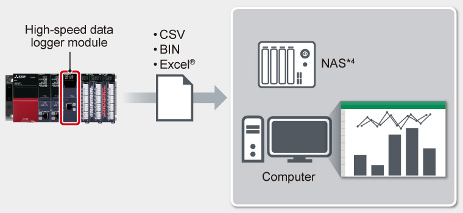
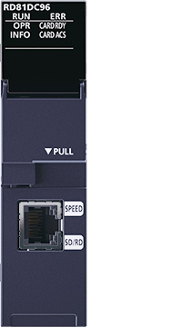
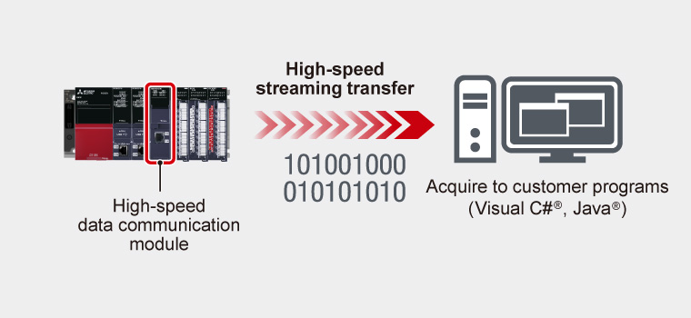

Controllers MELSEC iQ-R Series Product features -Advanced information-

Advanced information module
A cycle of collecting and analyzing production data for improvement is necessary to achieve “operating ratio improvement by preventive maintenance”, “high-speed equipment and production lines”, “traceability”, and “energy saving. Advanced information modules enable data communication with the IT system and programmable controllers, realizing coordination between the IT system and the shop floor.
Simplify error analysis through extensive recording of equipment data

RD81RC96
Recorder module
RD81RC96-CA
Camera recorder module
- Record with a time-stamp
per controller scan - All device/label
/event history recording - Easy setting of recording targets
- Extensive recording of
camera images*1
- *1.Supported by the camera recorder module only.

- *2.Network Attached Storage
Easily connect the programmable controller and database

RD81MES96N
MES interface module
- Easily set without a program
- Direct access to database

- *3.Automatically generate SELECT, UPDATE, DELETE, INSERT, etc.
Connect data using a secure and open communication protocol


Sample data to utilize for traceability and maintenance

RD81DL96
High-speed data logger module
- High-speed data sampling
with easy setting - Directly port to Excel®

- *4.Network Attached Storage

RD81DC96
High-speed data communication module
- High-speed streaming transfer
in real-time - Support highly flexible programming

Data destination/data type/applications of each module
| Product name | Recorder | Camera recorder | MES interface | OPC UA server | High-speed data logger | High-speed data communication |
|---|---|---|---|---|---|---|
| Data destination | Computer/ NAS (file server) SD memory card |
Computer/ NAS (file server) SD memory card |
Widely available/ open source database |
Computer (OPC UA client) |
Computer/ NAS (file server) SD memory card |
Computer (user program) |
| Data type | All device/label/ event history/ project data |
All device/label/ event history video data/ project data |
Preset device data | Preset device data | Preset device data | Preset device data |
| Applications |
|
|
|
|
|
|